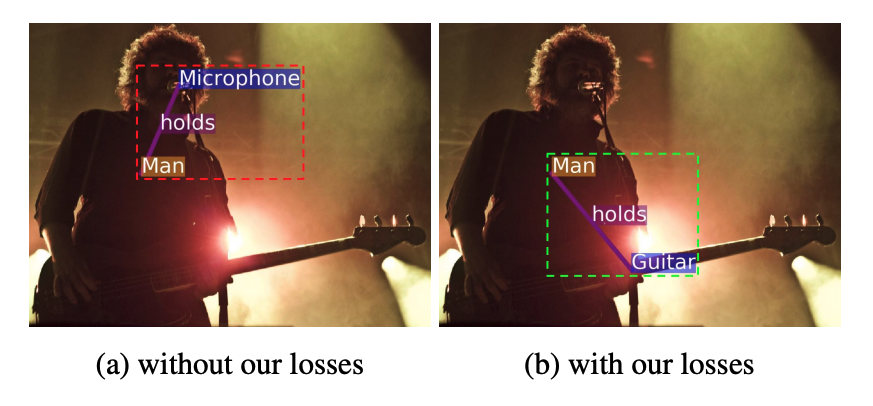

概要
シーングラフの生成において従来モデルの課題点を指摘した上で，それを改善するための新たなロスを提案し，SoTAを達成。
シーングラフにおける言葉の定義
まずはじめに論文の内容とは関係ないが，Graph-RCNNではあいまいになっていて読みにくかったシーングラフにおける言葉の定義をしっかり記していてくれたのが地味にありがたい。
・シーングラフを構成するにあたって必要にになるのは，objectとsubject,それをつなぐ関係性であるpredicateと，objectやsubjectに関するattributeの4つ。
[object, subject, predicate, attribute]
・実際に画像上に登場する物体(Object or Subject)は総称してentity.
[enitity]
・最終的に求めるべきobject,subject,predicateの関係性を<s,pred,o>と定義し，これのことをrelationshipsと呼ぶ。
[relationships]
従来手法の課題点
MotifNetのように，従来の手法ではまず初めにentityの情報を得てから，それをもとにpredicateをラベルのクラス分類問題として解くことでrelationshipsを求めるという２段階のアプローチが主流である。しかし，このようなアプローチには２つの課題が存在すると主張している。
⓵ Entity Instance Confusion
同じラベルのentityが複数登場した時，relationshipにおけるenitityがそのうちのどれであるかの判断が難しくなる。以下の例では，男の人が持っているのではない方のワイングラスにobjectが付加されてしまっている。

⓶ Proximal Rel Ambiguity
同様に同じラベルのpredicateを持ちうるobjectとsubjectのペアが複数ある時も，どのobjectとsubjectがペアであるかの判別が難しい。以下の例ではplaysというpredicateに対して3人の男と３つの楽器によるペアを判別する必要があるが，正しくマッチングできていないことがみて取れる。

上記の２つともの問題点が発生する原因として，relationshipsを求める際にそれぞれ独立のクラス分類問題として解いてしまっていることがあげられる。そのため同じ物体や考えられるペアが複数存在してもそれぞれを独立の問題として解いてしまっており，お互いを比較した上でどちらがより正しいかを考慮できていない。
本論文ではそれを解決するための新たなロスを提案している。
提案するロス
新たなロス関数では３種類のロスを組み合わせたものとなっている。
⓵ CLass Agnostic Loss
クラスラベルを考慮しないトリプレットロス。背景（関連なし）クラスを除いた全てのpredicateクラスに関して，以下のような関数として定義する。

今各entityにおいて，関係性を持つ他のentityとの間のスコアのうち最小のものを最大化し，関係性を持たない他のentityとの間のスコアのうち最大のものを最小化することを考える。そのためには，objectとsubjectに分けるとそれぞれ

を最大化することと同義。そのため最小化するロス関数は

となる。
⓶ Entity Class Aware Loss
EntityInstanceConfusionを解決するためのロス。基本的には⓵と同じだが，対応するentityのクラスが同じ中でトリプレットロスを計算する。
各クラスcに属するenitityに対して

を計算するため，ロス関数は

となる。
⓷ Predicate Class Aware Loss
⓶のpredicate版。ProximalRelAmbiguityを解決するためのロス。entityに付加されているpredicateのクラスが同じ中でトリプレットロスを計算する。
各predicateクラスeが付加されているentityに対して

を計算するため，ロス関数は

となる。
最終的なロス
以上３つのロスを(L1,2,3)，従来のcrossentropyloss(L0)に加えることによって学習する。

モデル
RelDNと呼ばれるモデルを提案。

Semantic, Spatial, Visualの３つのmoduleを用意し，最後に足し合わせたのちsoftmaxをかけてpredicateを出力。
Visualのうち，relationships全体の特徴量の抽出のみ別に用意したCNN(構造は同じ)を用いて行う。理由としては関係性を捉えるための特徴としてはその限定された領域に注目して欲しく，全体をみてしまうCNNと区別したかったから。（以下図参照）

実験


新規性
シーングラフ用の新たなロスの提案。